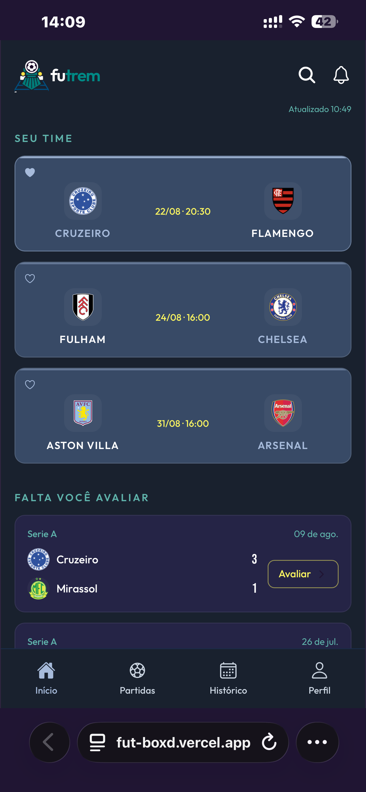
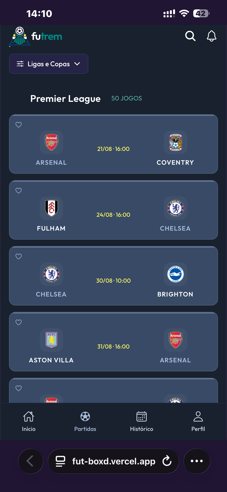
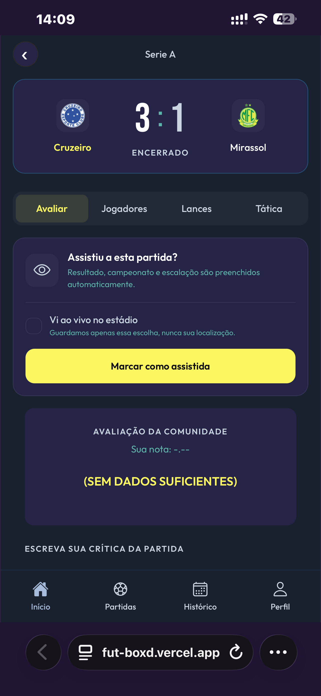
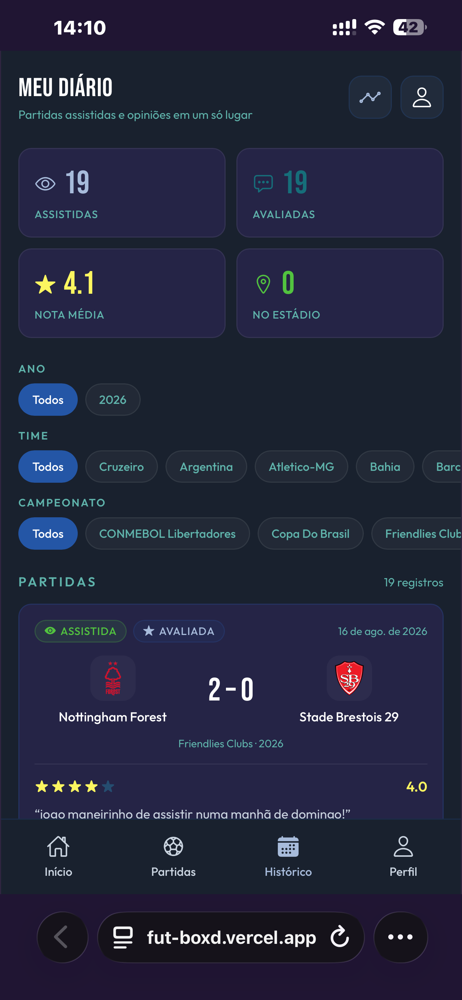
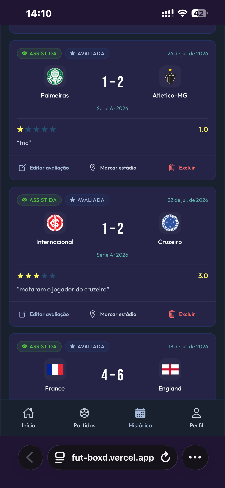
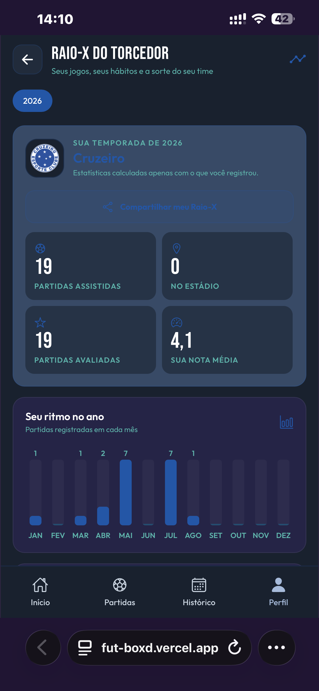

Você não entendeu
quando eu falei:
eu vivo futebol.
Alguns jogos acabam no apito final. Outros continuam com você.
Alguns jogos acabam no apito final. Outros continuam com você.
O vídeo vira lembrança. A lembrança vira opinião. A opinião vira parte da sua temporada.
Partidas, notas, resenhas e os detalhes que fizeram cada jogo ser seu.
Seu ritmo no ano, seus jogos e suas memórias reunidos em um único lugar.






Do apito ao seu diário
O Futrem transforma o que você sentiu durante os 90 minutos em uma memória que pode ser revisitada.
Busque confrontos das principais competições do Brasil e do mundo.
Avalie o jogo, o árbitro, os jogadores e até a beleza dos gols.
Veja suas estatísticas e relembre cada temporada pelos seus próprios olhos.